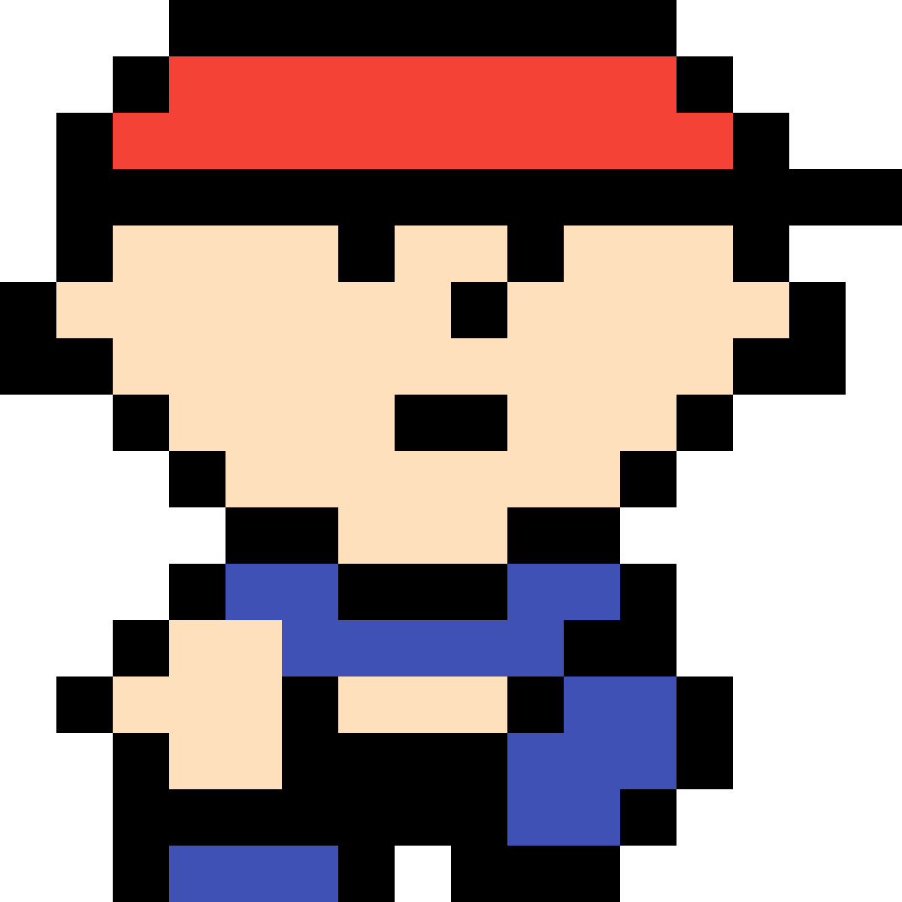
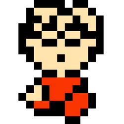
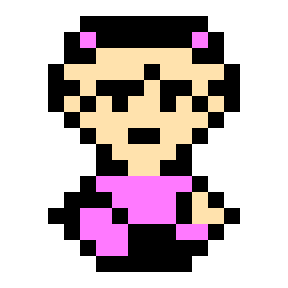
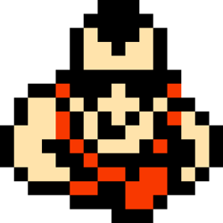

Premisa
El juego comienza cuando Ninten investiga fenómenos extraños en su casa, desencadenados por una fuerza misteriosa que resulta estar conectada con una invasión alienígena liderada por Giygas. A medida que explora diferentes localidades, Ninten se une a otros niños con habilidades únicas. Juntos intentan desentrañar el misterio de esta amenaza alienígena, al mismo tiempo que descubren más sobre el pasado de Ninten y la conexión de su familia con estos eventos.
El juego combina una narrativa emotiva con humor excéntrico y temas sobre la amistad, el coraje y la conexión humana frente a lo desconocido.
Ninten
Es un chico con asma que vive junto a su madre, sus hermanas y su perro en una casa cerca de Podunk que gracias al diario de su bisabuelo George desperto sus poderes PSI
Lloyd
Es un chico timido con un gran talento para la ciencia y la ingenieria. Aunque inicialmente es inseguro y objeto de burlas en su escuela, su inteligencia y habilidades resultan esenciales para el grupo, ya que puede reparar dispositivos y utilizar armas unicas
Ana
Es una joven dulce y bondadosa que vive en un castillo en la region nevada de Snowman junto a su padre. Es conocida por sus poderes PSI, aunque no le agrada usarlos y solo los emplea cuando es absolutamente necesario.
Teddy
Es el lider de una pandilla en la ciudad de Ellay y, al principio, muestra una actitud desafiante hacia Ninten y los demas. Sin embargo, tras un incidente que revela su lado mas humano, decide unirse al equipo para buscar venganza contra los responsables de la muerte de sus padres.
